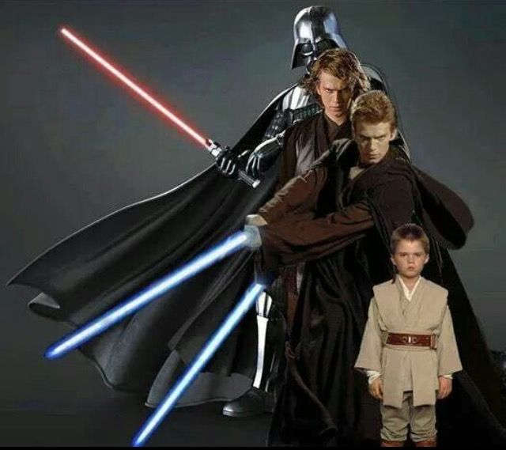

Home Page
The Home page of this website serves as the gateway to an extensive exploration of Anikan Skywalker's life. It spans his entire timeline, from a young, innocent child to his eventual transformation into the formidable Darth Vader. This page introduces the website overarching narrative, offering a tantalizing preview of the journey ahead. It promises a comprehensive dive into the life of one of Star Wars' most iconic characters. Users can expect to uncover the pivotal moments that define Anakin's path, both visually and through engaging content. This page is adorned with two intriguing images, setting the tone for the captivating story that follows.
